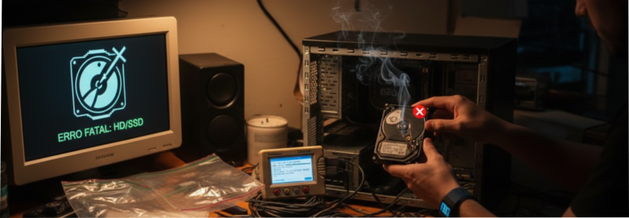
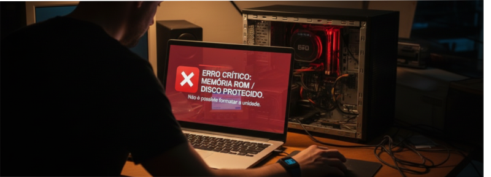
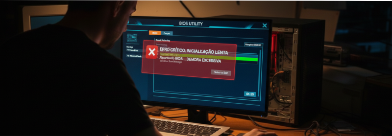
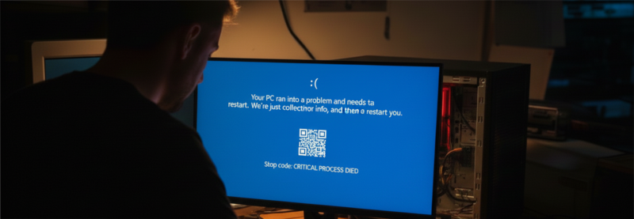
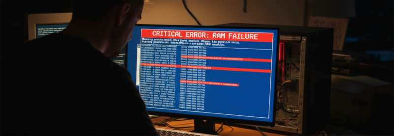
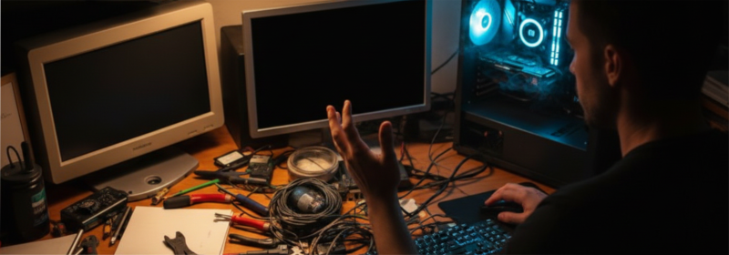
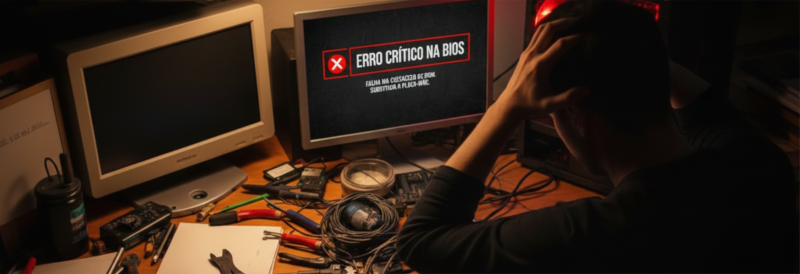
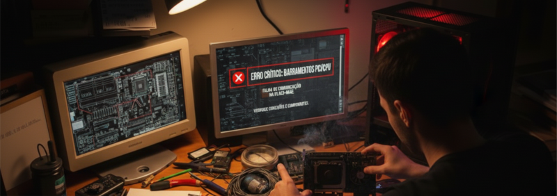
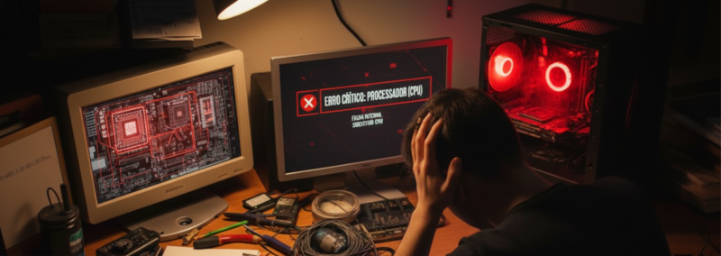
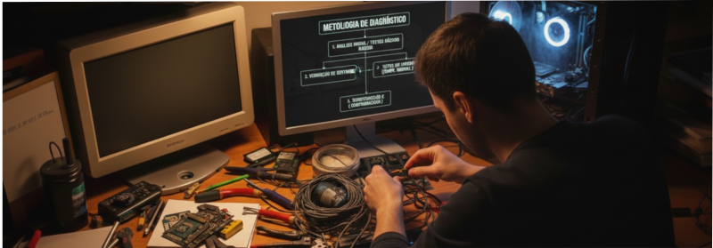

Diagnóstico de Defeitos?
Diagnóstico é o processo de identificar a causa real de um problema no computador,
analisando sintomas, comportamento do sistema e
respostas do hardware.
Um bom técnico troca o componente somente após confirmar a falha.

Problemas no HD / SSD
Sintomas comuns:
• Lentidão extrema no sistema
• Travamentos constantes
• Erros ao copiar arquivos
• Sistema não inicia ou pede reparo
Causas:
• Setores defeituosos (bad blocks)
• Firmware corrompido
• Cabo SATA defeituoso
• SSD com células desgastadas

Memória ROM / Disco não deixa formatar
Sintomas:
• Erro durante a formatação
• Partição protegida contra gravação
• Sistema diz “disco somente leitura”
Causas possíveis:
• Tabela de partição corrompida
• Firmware bloqueado (SSD/pendrive)
• Falha física no dispositivo
• Erros no controlador SATA/NVMe

Demora ao entrar na BIOS
Sintomas:
• Tela preta por muito tempo antes do boot
• BIOS demora a carregar
Causas:
• HD/SSD com falha sendo detectado
• Pendrive conectado com erro
• BIOS desatualizada
• Problemas no barramento SATA ou USB

Tela Azul da Morte (BSOD)
Sintomas:
• Reinicializações inesperadas
• Mensagens de erro em tela azul
Principais causas:
• Memória RAM defeituosa
• Drivers incompatíveis
• Superaquecimento
• Erros no HD/SSD
• Fonte instável

Problemas de Memória RAM
Sintomas:
• Computador não dá vídeo
• Bipes longos ou repetidos
• Tela azul frequente
• Erro de memória insuficiente
Causas:
• Módulo defeituoso
• Mau contato no slot
• Frequência incompatível
• Oxidação nos contatos

Não dá Vídeo (sem imagem)
Possíveis causas:
• Memória RAM mal encaixada
• Processador com defeito
• BIOS corrompida
• Placa de vídeo com falha
• Fonte sem energia suficiente

Problemas na BIOS da Placa-Mãe
Sintomas:
• Não salva configurações
• Data e hora resetam
• PC não inicia
Causas:
• Bateria CR2032 descarregada
• Atualização de BIOS mal sucedida
• Arquivo de BIOS corrompido

Problemas nos Barramentos da Placa
Sintomas:
• Dispositivos não reconhecidos
• USBs falhando
• HD some da BIOS
Causas:
• Trilhas rompidas
• Solda fria
• Curto causado por oxidação
• Controlador danificado

Problemas no Processador (CPU)
Sintomas:
• PC liga mas não dá vídeo
• Desliga sozinho
• Superaquecimento rápido
Causas:
• Pinos tortos (AMD / socket)
• Pasta térmica seca ou ausente
• Cooler mal instalado
• Processador queimado (raro, mas possível)

Metodologia Correta de Diagnóstico
✔ Testar com o mínimo de componentes
✔ Trocar apenas um componente por vez
✔ Usar multímetro e software de teste
✔ Observar bipes, LEDs e códigos POST
✔ Nunca assumir defeito sem testar